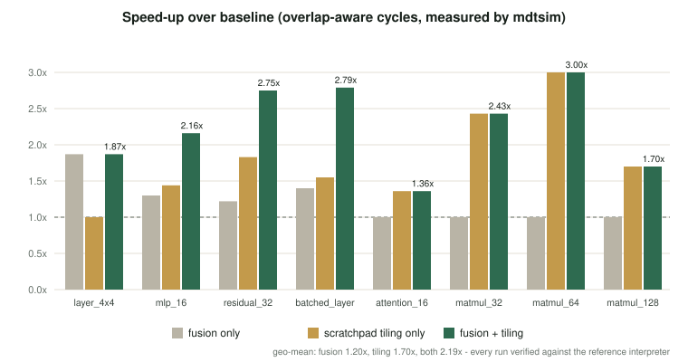
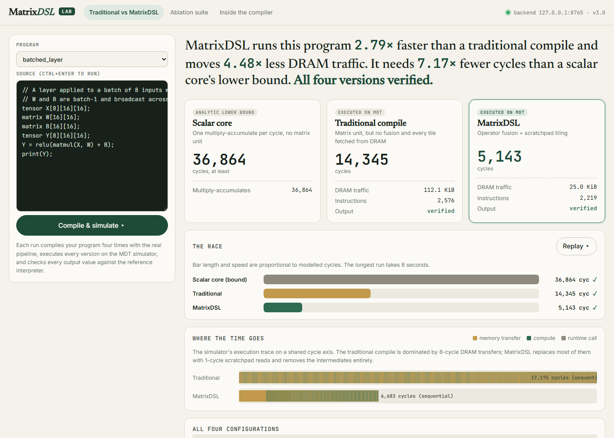

Abstract—Compilers for machine-learning workloads lose most of their optimisation opportunities when matrix programs are lowered too early to scalar code. We present MatrixDSL, a small domain-specific language for matrix and neural-network computation, and a complete compiler that lowers it to MDT (MatrixDSL Target), a 24-instruction matrix instruction set architecture (ISA) with 4×4 FP32 matrix registers and a 64 KiB software-managed scratchpad that we designed together with the compiler. The pipeline runs a hand-written lexer and parser, shape-as-type semantic analysis, lowering to a static single assignment (SSA) Tensor IR, three optimisation passes (use-count-guarded operator fusion with epilogue fusion, dead-code elimination and capacity-aware scratchpad tiling), MDT instruction selection, and execution on a simulator with an analytical performance model. We prove that the fusion rewrite, the zero-padding memory layout and the identity-tile addition are value-preserving, and we validate the implementation by differential testing against an independent reference interpreter: 100 of 100 compiled program variants and 70 of 70 regression tests pass. On eight workloads, fusion and tiling together reduce modelled cycles by a geometric mean of 2.19× and DRAM traffic by 3.79×. The two optimisations are super-additive on fused workloads. The evaluation also exposes a scratchpad capacity cliff at 128×128 and an ISA gap that prevents softmax from compiling to native MDT code. Source code, results and an interactive browser-based laboratory are public at https://github.com/shreyasmandem/MatrixDSL.
Index Terms—domain-specific languages, compilers, intermediate representations, operator fusion, loop tiling, scratchpad memory, instruction set architecture, differential testing, machine-learning accelerators.
Deep-learning compilers such as XLA [1], TVM [2] and Triton [4] exist because general-purpose compilers discard the structure of tensor programs too early. Once a matrix multiplication has become nested loops in LLVM IR [6], the compiler can no longer see that a multiplication followed by a bias addition and an activation is one computation (an epilogue that can be fused [1]), nor that the same weight tile is fetched from memory dozens of times. Production accelerator stacks avoid both losses by keeping a tensor-level IR, fusing producer–consumer chains and staging data in software-managed on-chip memory, as the Tensor Processing Unit does [7].
MatrixDSL reproduces this design end to end, at a scale that a team of four students can build, read and measure within one course. The language makes the shape of every value part of its type, so dimension errors are compile-time errors. The compiler keeps matrix operations whole in a Tensor IR until the target-specific decisions have been made. The target, MDT, was specified in parallel so that every fused IR operation maps to an MDT instruction sequence.
The paper makes the following contributions:
MATMULACC and MATMULRELU exist because the fusion pass emits exactly those patterns, and epilogue fusion of relu(A·B+C) needs no new opcode.Section II reviews related work and Section III describes the project organisation. Sections IV–VIII present the language, architecture, middle end, back end and performance model. Section IX describes verification, Section X the evaluation and Section XI the interactive laboratory. Section XII discusses limitations and Section XIII concludes.
XLA lowers whole TensorFlow graphs and fuses element-wise consumers into their producers. Snider and Liang [1] show that fusion accounts for much of its benefit. TVM [2] separates the algorithm from a schedule of loop transformations, a separation that Halide [3] introduced for image processing. Triton [4] exposes tiles as first-class values, and MLIR [5] provides a framework of dialects so that each level of abstraction can be optimised before lowering to LLVM [6]. MatrixDSL's Tensor IR plays the role of such a dialect: an SSA list of shape-typed matrix operations that sits between the AST and target code.
The TPU [7] pairs a systolic matrix unit with a large software-managed buffer whose contents the compiler, not a cache policy, decides. Blocking for reuse in a memory hierarchy is a classic compiler optimisation [8]. MDT adopts the same arrangement at teaching scale: eight 4×4 matrix registers, a 64 KiB scratchpad and DRAM.
BF16 keeps FP32's exponent range with a shorter mantissa [9]. MDT supports it as a storage format. Numerically stable softmax subtracts the row maximum before exponentiation, and online normalisers [10] enable the softmax-epilogue fusion used by FlashAttention [11].
Differential testing compares implementations of the same specification [12]. Csmith [13] applied it to C compilers at scale. We apply it between the compiled MDT program and an independent reference interpreter, under four optimisation configurations.
| Property | XLA [1] | TVM [2] | Triton [4] | MatrixDSL |
|---|---|---|---|---|
| Tensor-level IR | HLO | Relay/TIR | Tile IR | Tensor IR (19 ops) |
| Fusion | Yes | Yes | Manual | Use-count guarded + epilogue |
| Memory staging | Target-dependent | Schedules | Shared memory | Scratchpad pass |
| Target ISA co-designed | No | No | No | Yes (MDT) |
| Differential oracle | Tests | Tests | Tests | Built in, every run |
| Scale | Production | Production | Production | Teaching, readable |
The project was carried out in three phases, each closed by a formal review. Interfaces between stages were frozen as C++ headers on the main branch at the first review, so that each member could build against a fixed contract on a personal branch. Table II lists the team. Table III summarises what each phase delivered, and Appendix B describes each member's work in detail.
| Member | Reg. No. | Role and owned stages | Branch |
|---|---|---|---|
| Vinay A | 24BCB0131 | Lexer, parser, AST; diagnostics; compiler driver matrixdslc | Vinay-A |
| Mudpe Parth Tulsidas | 24BDS0353 | Semantic analysis, symbol table; differential tester mtxverify | parth |
| Kandi Jeevitesh Reddy | 24BCE0350 | Tensor IR, lowering, fusion/DCE/tiling passes, reference interpreter, LLVM IR | Jeevitesh |
| Shreyas Mandem | 24BCE0381 | MDT ISA, code generator, simulator, runtime ABI, evaluation, MatrixDSL Lab, integration | Shreyas |
| Faculty guide: Prof. Shalini L, Assistant Professor Sr. Grade 1, SCOPE, VIT Vellore. | |||
| Review | Deliverables |
|---|---|
| 1 | Language specification and grammar; MDT ISA (17 instructions); architecture; frozen interfaces; lexer; shape checker on hand-built ASTs; simulator. |
| 2 | Batched tensor type and softmax; parser and AST; batch-aware shape rules; Tensor IR and fusion on hand-built graphs; 7 new instructions (24 total), 64 KiB scratchpad, BF16, performance model. |
| 3 (final) | AST→Tensor IR lowering; epilogue fusion, DCE, tiling; MDT code generator; runtime ABI; differential verification; ablation study; MatrixDSL Lab; this report. |
A program is a sequence of declarations, assignments and print statements over FP32 matrices. Fig. 1 shows the grammar in EBNF. A tensor declaration with three bracketed dimensions adds a leading batch dimension. Matrix literals may contain signed decimal numbers.
program ::= statement*
statement ::= decl | IDENT "=" expr ";" | "print" "(" IDENT ")" ";"
decl ::= ("matrix"|"tensor") IDENT ("[" INT "]"){2,3} ";"
expr ::= term (("+"|"-") term)*
term ::= factor ("*" factor)*
factor ::= IDENT | NUMBER | literal | "(" expr ")"
| ("matmul"|"transpose"|"relu"|"softmax") "(" args ")"
literal ::= "[" row ("," row)* "]" row ::= "[" ["-"]NUMBER ("," ["-"]NUMBER)* "]"
Fig. 1. MatrixDSL grammar (abridged).
The type of a value is its shape (b, r, c). Table IV gives the typing rules that the semantic analyser enforces. Batch broadcasting follows the familiar NumPy convention restricted to the leading dimension: batches must be equal, or one of them must be 1.
| Expression | Rule | Result |
|---|---|---|
A ± B | rA=rB, cA=cB, b compatible | (max b, r, c) |
matmul(A,B), A*B | cA=rB, b compatible | (max b, rA, cB) |
s*A | s is 1×1 | shape of A |
transpose(A) | - | (b, c, r) |
relu, softmax | - | shape preserved |
| Declarations | 1 ≤ r, c ≤ 256; 1 ≤ b ≤ 1024 | - |
Every lexical, syntax and semantic error is reported with its source line and a caret. For example, the compiler emits:
matmul_mismatch.mtx:6:5: error: cannot multiply matrix 4x3 with matrix 4x4
6 | C = matmul(A, B);
| ^
note: matmul requires A.cols == B.rows, but 3 != 4
mtxverify/mtxbench compare its output with the simulator's under four configurations (bottom). mtxserve exposes the same pipeline to the browser dashboard and Chrome extension.Fig. 2 shows the pipeline. A single Pipeline object runs every stage in order and retains each intermediate form: tokens, AST, Tensor IR before and after the passes, assembly and simulator output. The compiler driver, the differential tester, the benchmark harness and the dashboard backend are thin front ends over it, so every tool compiles a program in exactly the same way. Table V lists the tools.
| Tool | Purpose |
|---|---|
matrixdslc | Compiler: --emit-tokens/-ast/-tir/-llvm, -S, --run --perf --verify, --no-fusion, --no-tiling |
mdtsim | MDT assembler, simulator, performance model |
mtxverify | Differential tester (Section IX) |
mtxbench | Ablation study (Section X) |
mtxserve | Local JSON backend for the MatrixDSL Lab (Section XI) |
Lowering walks the typed AST and appends one Tensor IR operation per expression node, each annotated with its shape. An assignment rebinds a name to the operation that computed its value rather than copying it. As a result, T = matmul(X,W); U = T + B; U = relu(U); lowers to the same graph as relu(matmul(X,W)+B), and named temporaries never block fusion. Observable behaviour is defined by print. A matrix read before it is ever assigned is a program input and becomes a Load operation.
Table VI lists the fusion patterns. The Phase 3 addition is epilogue fusion: FusedMatMulAcc → Relu becomes a three-operand FusedMatMulRelu computing relu(A·B+C).
| Pattern (producer has one use) | Result | MDT lowering |
|---|---|---|
| MatMul → Relu | FusedMatMulRelu(A,B) | MATMULRELU |
| MatMul → Add(C) | FusedMatMulAcc(A,B,C) | load C; MATMULACC |
| FusedMatMulAcc → Relu | FusedMatMulRelu(A,B,C) | load C; MATMULACC; RELU in register |
Print unchanged.Print, reads it. Every printed value is therefore unchanged. If use(p) > 1, some other operation reads p, and deleting it would be incorrect. That is exactly the case the guard excludes. The implementation is checked by a negative test (second_use.mtx) in which a matrix product is both printed and passed to relu. Fusion correctly does not fire.
DCE marks every operation reachable backwards from a Print and erases the rest. Because operations are in SSA order, one reverse sweep reaches the fixed point. DCE removes the products that fusion absorbed.
For a matrix-multiplication-family operation C(M×N) = A(M×K)·B(K×N), let Mt, Nt, Kt be the numbers of 4×4 tiles in each dimension. Each tile of A is read uA = Nt times and each tile of B uB = Mt times, multiplied by the batch count when the operand is broadcast. Algorithm 1 stages operands in the 64 KiB scratchpad.
The pass's decisions are visible with --stats. For matmul_32, it reports:
tiled matmuls 1 staged A of %6: 64 tiles, each reused 8x, saves 28672 DRAM bytes staged B of %6: 64 tiles, each reused 8x, saves 28672 DRAM bytes
MDT is a 32-bit load/store architecture with sixteen scalar registers, eight 128-bit vector registers and eight 4×4 FP32 matrix registers (64 B each). Table VII summarises its 24 instructions. The scratchpad is reached by the SCRATCHLOAD/SCRATCHSTORE forms of load and store. Phase 3 changed the compiler, not the ISA.
| Class | Instructions | Lat. |
|---|---|---|
| Scalar | NOP ADD SUB MUL | 1 |
| Memory | LOAD STORE (DRAM 8, scratchpad 1) | 8/1 |
| Control | BR BEQ BNE JMP CALL RET | 1 |
| Vector | VADD VMUL | 2 |
| Matrix | MATMUL TRANSPOSE RELU | 4/2/2 |
| Fused (Ph. 2) | MATMULACC MATMULRELU | 4 |
| Convert (Ph. 2) | CVT.F32.BF16 CVT.BF16.F32 | 1 |
| Reduce (Ph. 2) | VREDSUM MROWMAX MROWSUM | 2 |
Every DRAM-resident value receives one 64-byte-aligned buffer. The buffer is row-major, with rows and columns rounded up to multiples of four (r̂ = 4⌈r/4⌉, ĉ = 4⌈c/4⌉) and batches stacked. Tiles are read with strided loads (LOADT). Fig. 3 illustrates a 5×3 matrix.
Table VIII gives the selection for each operation, one 4×4 output tile at a time. Register plan: M0 accumulator, M1/M2 operands, M3 staging, M5 scale tile, M6 = −I, M7 = +I.
| Tensor IR | MDT sequence |
|---|---|
| MatMul / TiledMatMul | MATMUL, then MATMULACC per extra k-tile |
| FusedMatMulAcc | LOAD M0←C; MATMULACC × Kt |
| FusedMatMulRelu | MATMULRELU (Kt=1, no bias) or accumulate + RELU M0,M0 |
| Add / Sub | MATMULACC M0, M1, M7 (or M6) |
| ScalarMul | MATMUL M0, M1, M5, M5 = s·I |
| Transpose / Relu | TRANSPOSE on tile (j,i) / RELU |
| Softmax / Print | CALL mdt_softmax / CALL mdt_print |
| ScratchStore | LOAD M3 + SCRATCHSTORE, once per tile |
MATMULACC M0, M1, M7 sets M0 to M0 + M1 exactly in IEEE-754 FP32, and with M6 = −I to M0 − M1.Without this, MDT would add a tile with sixteen 4-lane vector instructions, each load paying the 8-cycle DRAM latency. The matrix unit does it in three instructions per tile.
MDT deliberately has no transcendental instruction and no I/O. mdt_softmax and mdt_print are host functions inside the simulator, reached by CALL with arguments in R1–R6. Softmax is charged 4 cycles and 8 DRAM bytes per element, and print is excluded from the model as host I/O.
Fig. 4 shows the Tensor IR and the generated code for one layer. The three source operations become a single fused tile operation with one store.
; Tensor IR after passes ; generated MDT assembly
%0 = Load @X : 4x4 ADD R1, R0, 0 ; &in_X
%1 = Load @W : 4x4 ADD R2, R0, 64 ; &in_W
%2 = Load @B : 4x4 ADD R3, R0, 128 ; &in_B
%3 = FusedMatMulRelu %0 %1 %2 ADD R4, R0, 192 ; &t3
%4 = Print %3 @Y : 4x4 LOAD M0, [R3 + 0] ; bias
LOAD M1, [R1 + 0]
LOAD M2, [R2 + 0]
MATMULACC M0, M1, M2
RELU M0, M0
STORE M0, [R4 + 0]
Fig. 4. Y = relu(matmul(X, W) + B) after the passes and its generated MDT code.
--emit-llvm writes a textual LLVM module of calls to the reserved @mdt.* tile intrinsics fixed at the first review. This keeps the LLVM path inspectable without linking LLVM. The TableGen target description remains available as an opt-in build.
The simulator records each executed instruction's latency ℓi and class (transfer, compute or other). The sequential estimate is
The trace is run-length encoded into maximal runs R1, …, Rm of one class with cycle sums t1, …, tm. Adjacent transfer/compute runs are paired left to right without overlap, and each pair costs the larger of the two:
The model is analytical and is not cycle-accurate. It compares code-generation strategies on equal terms. It does not predict silicon.
Every measurement in Section X is gated on correctness. (1) Oracle: the reference interpreter evaluates the unoptimised Tensor IR in FP32 on the host. It has no tiles, registers or scratchpad and shares no code with the back end. (2) Inputs: never-assigned matrices are filled by a seeded linear congruential generator with values k/8, k ∈ {−16, …, 16}. (3) Four-way testing: mtxverify compiles each program under {baseline, fusion, tiling, fusion+tiling}, runs it, and compares every printed value (relative tolerance 10−5). (4) Negative tests: programs marked expect: error must be rejected with the expected diagnostic text.
Programs that apply softmax, or a second layer to already-multiplied values, are not covered by Proposition 4. For softmax, the runtime and the oracle use the same operation order, and the tolerance absorbs any remaining difference. Table IX summarises the test results. Appendix A reproduces the raw tool output.
| Suite | Count | Pass |
|---|---|---|
| Lexer / parser (Vinay A) | 12 / 16 | 28 |
| Semantic (Mudpe Parth Tulsidas) | 9 | 9 |
| Reference runtime (Kandi Jeevitesh Reddy) | 9 | 9 |
| Hand-written MDT programs (Shreyas Mandem) | 17 | 17 |
| Driver accept/reject, e2e, ablation | 7 | 7 |
| All CTest suites | 70 | 70 |
| Differential runs (25 programs × 4 configs) | 100 | 100 |
| Negative programs rejected | 6 | 6 |
The differential tests also found real defects during integration (Table X), which were fixed before the measurements were taken.
| Defect | Fix |
|---|---|
Lexer never emitted tensor/softmax tokens | Keyword table updated |
| Negative matrix-literal elements rejected | Optional sign in literal rows |
| Shadowed names outlived their scope | popScope updates declaration order |
| Test driver quoting broke under Windows | Command wrapped for cmd.exe |
We use eight workloads: a single 4×4 layer, a two-layer perceptron (16×16), a residual block (32×32), a batch of eight 16×16 layers with shared weights, one-head scaled dot-product attention (16×16), and square matrix multiplication at 32, 64 and 128. Each is compiled under four configurations, executed on mdtsim and verified against the oracle. All 32 runs pass. The baseline configuration (fusion and tiling disabled) represents a traditional compilation of the same program for the same hardware.

mdtsim, for fusion only, scratchpad tiling only, and both. Every run was verified against the reference interpreter.| Workload | Base cyc. | Ours cyc. | Speed-up | Base DRAM | Ours DRAM |
|---|---|---|---|---|---|
| layer_4x4 | 73 | 39 | 1.87× | 576 B | 256 B |
| mlp_16 | 3,337 | 1,543 | 2.16× | 26.1 K | 8.0 K |
| residual_32 | 11,273 | 4,103 | 2.75× | 88.1 K | 16.0 K |
| batched_layer | 14,345 | 5,143 | 2.79× | 112.1 K | 25.0 K |
| attention_16 | 3,862 | 2,838 | 1.36× | 24.1 K | 12.1 K |
| matmul_32 | 8,711 | 3,591 | 2.43× | 68.0 K | 12.0 K |
| matmul_64 | 67,591 | 22,535 | 3.00× | 528 K | 48 K |
| matmul_128 | 532,487 | 312,327 | 1.70× | 4.06 M | 2.13 M |
| Configuration | Speed-up | DRAM reduction |
|---|---|---|
| Fusion only | 1.20× | 1.22× |
| Scratchpad tiling only | 1.70× | 2.64× |
| Fusion + tiling | 2.19× | 3.79× |
F1, super-additivity. On batched_layer, fusion alone gives 1.40× and tiling alone 1.55×, but together they give 2.79×, more than their product (2.17×). Fusion removes the stored and reloaded intermediates, leaving traffic dominated by reads of the broadcast weight tiles. Each of those is reused 32 times (four output row blocks × eight batches), and that is exactly what staging removes.
F2, capacity cliff. Tiling's benefit grows from 2.43× at 32×32 to 3.00× at 64×64 (11× less DRAM traffic), then falls to 1.70× at 128×128. Each 128×128 operand occupies exactly 64 KiB, so only one of the two can be staged. This motivates a second blocking level that stages scratchpad-sized panels [8].
F3, instructions are the wrong metric. Staging adds 11–24% more instructions (e.g. 1,610 → 1,866 on matmul_32), yet cycles fall by 2.4×, because 8-cycle DRAM loads become 1-cycle scratchpad loads.
F4, missing patterns. Fusion gives no gain on attention, whose chain MatMul → ScalarMul → Softmax contains no fusible pair. Scale and online-softmax epilogues [10], [11] are the natural next patterns.
F5, an ISA gap. MROWMAX and MROWSUM reduce one tile, but rows wider than four columns span several tiles. Combining per-tile maxima needs a lane-wise vector maximum, and normalisation needs a row-broadcast divide. Softmax is therefore a runtime call. The compiler pinpoints the minimal ISA extension.
mtxserve is a dependency-free C++ HTTP server bound to 127.0.0.1 that exposes the pipeline as a JSON API (/api/run, /api/suite, /api/programs). A browser dashboard and a Manifest V3 Chrome extension (Fig. 6) send programs to it. They display the traditional and optimised compilations side by side as cards, an animated race and the simulator's transfer/compute timeline. They also show the Tensor IR before and after the passes and the generated assembly, and they re-run the whole ablation study live. The scalar-core figure in the dashboard is an analytic lower bound of one multiply–accumulate per cycle and is labelled as such.

batched_layer. Every number is computed live by the compiler and simulator, and all four configurations are verified.matmul_128).MatrixDSL shows that the central ideas of production tensor compilers can be co-designed with a target ISA, implemented end to end, verified by an oracle, and measured, within a single course project. Keeping matrix operations whole until target-specific decisions are made enabled fusion and scratchpad staging that together cut modelled cycles by 2.19× and DRAM traffic by 3.79×. Proofs of the rewrites, differential testing and the browser laboratory let every result be checked and reproduced. Future work is second-level blocking to remove the capacity cliff, scale and softmax epilogues, the two-instruction ISA extension for native softmax, loop generation instead of full unrolling, and lowering of the emitted @mdt.* intrinsics through the LLVM TableGen back end.
The authors thank Prof. Shalini L, School of Computer Science and Engineering, Vellore Institute of Technology, for her guidance throughout the three reviews of this project.
Build, test and reproduce every number:
git clone https://github.com/shreyasmandem/MatrixDSL cmake -S MatrixDSL -B build -DCMAKE_BUILD_TYPE=Release cmake --build build -j ctest --test-dir build build/bin/mtxverify tests/e2e examples benchmarks/workloads build/bin/mtxbench benchmarks/workloads --md r.md --csv r.csv
Recorded output on the final build (MinGW-w64 GCC, Windows 11):
$ ctest --test-dir build 100% tests passed out of 70 $ mtxverify --quiet tests/e2e examples benchmarks/workloads 31 passed, 0 failed $ matrixdslc benchmarks/workloads/layer_4x4.mtx --run --perf --verify Y = (4x4) [ 0.8750 0.0000 0.0000 4.7188 ] [ 1.5156 3.7188 2.8438 0.0000 ] [ 3.0312 0.0000 2.6406 4.2188 ] [ 0.0000 0.2031 0.0000 0.0000 ] Instructions executed : 17 Bytes moved (DRAM) : 256 Estimated cycles, sequential : 49 Estimated cycles, overlap-aware: 39 verify: PASS - 1 print(s) match the reference interpreter $ mtxbench benchmarks/workloads All 32 runs verified against the reference interpreter: yes
Vinay A (24BCB0131). He built the hand-written lexer and the recursive-descent parser with panic-mode recovery, including the Phase 2 tensor declarations and softmax calls. In Phase 3 he built the matrixdslc driver and the shared Pipeline used by every tool, and added caret diagnostics. He also wired the Phase 2 keywords into the lexer and added signed literals. Evidence: 28 lexer and parser tests.
Mudpe Parth Tulsidas (24BDS0353). He built the shape-as-type semantic analyser and the scoped symbol table, the Phase 2 batch-broadcast rule and checkSoftmax. In Phase 3 he built the differential tester mtxverify and the end-to-end corpus (11 positive, 6 negative programs). He also fixed the symbol-table scope order and the Windows test-driver quoting. Evidence: 9 semantic tests, 100/100 verified runs and 6/6 rejections.
Kandi Jeevitesh Reddy (24BCE0350). He designed the Tensor IR (19 operation kinds in two tiers) and the use-count-guarded fusion pass. In Phase 3 he built the AST-to-Tensor-IR lowering, epilogue fusion, dead-code elimination and the capacity-aware scratchpad tiling pass. He also built the reference interpreter used as the oracle, and the LLVM IR text emitter. Evidence: 9 reference-runtime tests and the --emit-tir/--stats outputs.
Shreyas Mandem (24BCE0381). He designed the MDT ISA (17, then 24 instructions), the 64 KiB scratchpad, BF16 support, the reductions, the assembler, the simulator and the performance model. In Phase 3 he built the MDT code generator (memory layout, instruction selection, identity-tile addition), the runtime ABI, the mtxbench ablation study and the MatrixDSL Lab (mtxserve, dashboard, Chrome extension). He also integrated all members' work into a single build and wrote this report. Evidence: 17 back-end tests and 32/32 verified benchmark runs.